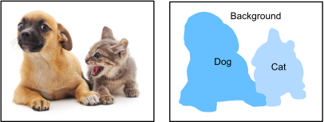

!pip install patool
Requirement already satisfied: patool in /Users/ascotbe/anaconda3/lib/python3.10/site-packages (2.4.0)
语义分割和数据集#
本节将探讨语义分割（semantic segmentation）问题，它重点关注于如何将图像分割成属于不同语义类别的区域。 与目标检测不同，语义分割可以识别并理解图像中每一个像素的内容：其语义区域的标注和预测是像素级的。 下图展示了语义分割中图像有关狗、猫和背景的标签。 与目标检测相比，语义分割标注的像素级的边框显然更加精细。
图像分割和实例分割#
计算机视觉领域还有2个与语义分割相似的重要问题，即图像分割（image segmentation）和实例分割（instance segmentation）。 我们在这里将它们同语义分割简单区分一下。
图像分割将图像划分为若干组成区域，这类问题的方法通常利用图像中像素之间的相关性。它在训练时不需要有关图像像素的标签信息，在预测时也无法保证分割出的区域具有我们希望得到的语义。图像分割可能会将狗分为两个区域：一个覆盖以黑色为主的嘴和眼睛，另一个覆盖以黄色为主的其余部分身体。
实例分割也叫同时检测并分割（simultaneous detection and segmentation），它研究如何识别图像中各个目标实例的像素级区域。与语义分割不同，实例分割不仅需要区分语义，还要区分不同的目标实例。例如，如果图像中有两条狗，则实例分割需要区分像素属于的两条狗中的哪一条。
Pascal VOC2012 语义分割数据集#
最重要的语义分割数据集之一是Pascal VOC2012。 下面我们深入了解一下这个数据集。
%matplotlib inline
import torch
import torchvision
from d2l import torch as d2l
数据集的tar文件大约为2GB，所以下载可能需要一段时间。
提取出的数据集位于../raw/data/VOCdevkit/VOC2012。
import requests
import hashlib
import shutil
import patoolib
import os
# 文件的 URL
url = "http://d2l-data.s3-accelerate.amazonaws.com/VOCtrainval_11-May-2012.tar"
# 下载到本地的文件路径
local_filename = "../raw/data/VOCtrainval_11-May-2012.tar"
# 解压缩的目录
extract_to = "../raw/data/"
# 下载文件
def download_file(url, local_filename,sha1_hash):
os.makedirs(os.path.dirname(local_filename), exist_ok=True)
try:
sha1 = hashlib.sha1()
with open(local_filename, 'rb') as f:
while True:
data = f.read(1048576)
if not data:
break
sha1.update(data)
if sha1.hexdigest() == sha1_hash:
print(f"文件已存在: {local_filename}")
return local_filename
except Exception as e:
pass
with requests.get(url, stream=True) as r:
r.raise_for_status()
with open(local_filename, 'wb') as f:
for chunk in r.iter_content(chunk_size=8192):
f.write(chunk)
print(f"文件已下载: {local_filename}")
return local_filename
# 解压文件
def extract_archive(file_path, extract_to=None):
if extract_to is None:
extract_to = os.path.dirname(file_path)
# 获取文件扩展名
ext = os.path.splitext(file_path)[-1].lower()
# 根据文件扩展名选择解压方式
try:
if ext in ['.zip']:
shutil.unpack_archive(file_path, extract_to, 'zip')
elif ext in ['.tar', '.gz', '.bz2', '.xz']:
shutil.unpack_archive(file_path, extract_to)
elif ext in ['.rar']:
patoolib.extract_archive(file_path, outdir=extract_to)
else:
print(f"未知的文件扩展名 '{ext}'。尝试使用 patoolib 解压...")
patoolib.extract_archive(file_path, outdir=extract_to)
print(f"解压完成: {file_path} -> {extract_to}")
except Exception as e:
print(f"解压 {file_path} 时出错: {e}")
download_file(url, local_filename,"4e443f8a2eca6b1dac8a6c57641b67dd40621a49")
extract_archive(local_filename, extract_to)
文件已存在: ../raw/data/VOCtrainval_11-May-2012.tar
解压完成: ../raw/data/VOCtrainval_11-May-2012.tar -> ../raw/data/
进入路径../raw/data/VOCdevkit/VOC2012之后，我们可以看到数据集的不同组件。
ImageSets/Segmentation路径包含用于训练和测试样本的文本文件，而JPEGImages和SegmentationClass路径分别存储着每个示例的输入图像和标签。
此处的标签也采用图像格式，其尺寸和它所标注的输入图像的尺寸相同。
此外，标签中颜色相同的像素属于同一个语义类别。
下面将read_voc_images函数定义为将所有输入的图像和标签读入内存。
def read_voc_images(voc_dir, is_train=True):
"""读取所有VOC图像并标注"""
txt_fname = os.path.join(voc_dir, 'ImageSets', 'Segmentation',
'train.txt' if is_train else 'val.txt')
mode = torchvision.io.image.ImageReadMode.RGB
with open(txt_fname, 'r') as f:
images = f.read().split()
features, labels = [], []
for i, fname in enumerate(images):
features.append(torchvision.io.read_image(os.path.join(
voc_dir, 'JPEGImages', f'{fname}.jpg')))
labels.append(torchvision.io.read_image(os.path.join(
voc_dir, 'SegmentationClass' ,f'{fname}.png'), mode))
return features, labels
voc_dir="../raw/data/VOCdevkit/VOC2012/"
train_features, train_labels = read_voc_images("../raw/data/VOCdevkit/VOC2012/", True) # 训练特征、训练标签
print(train_features[0])
print(train_labels[0])
tensor([[[131, 131, 131, ..., 182, 182, 182],
[132, 132, 133, ..., 183, 183, 182],
[133, 133, 134, ..., 183, 183, 182],
...,
[ 6, 5, 7, ..., 16, 16, 16],
[ 4, 9, 10, ..., 16, 17, 17],
[ 5, 6, 10, ..., 16, 12, 17]],
[[193, 193, 193, ..., 232, 232, 232],
[194, 194, 195, ..., 233, 233, 232],
[195, 195, 196, ..., 233, 233, 232],
...,
[ 15, 14, 13, ..., 34, 34, 34],
[ 14, 18, 18, ..., 34, 35, 35],
[ 15, 16, 18, ..., 33, 29, 34]],
[[208, 208, 208, ..., 241, 241, 241],
[209, 209, 210, ..., 242, 242, 241],
[210, 210, 211, ..., 242, 242, 241],
...,
[ 12, 13, 13, ..., 38, 38, 38],
[ 13, 17, 20, ..., 38, 39, 39],
[ 14, 15, 20, ..., 40, 36, 41]]], dtype=torch.uint8)
tensor([[[0, 0, 0, ..., 0, 0, 0],
[0, 0, 0, ..., 0, 0, 0],
[0, 0, 0, ..., 0, 0, 0],
...,
[0, 0, 0, ..., 0, 0, 0],
[0, 0, 0, ..., 0, 0, 0],
[0, 0, 0, ..., 0, 0, 0]],
[[0, 0, 0, ..., 0, 0, 0],
[0, 0, 0, ..., 0, 0, 0],
[0, 0, 0, ..., 0, 0, 0],
...,
[0, 0, 0, ..., 0, 0, 0],
[0, 0, 0, ..., 0, 0, 0],
[0, 0, 0, ..., 0, 0, 0]],
[[0, 0, 0, ..., 0, 0, 0],
[0, 0, 0, ..., 0, 0, 0],
[0, 0, 0, ..., 0, 0, 0],
...,
[0, 0, 0, ..., 0, 0, 0],
[0, 0, 0, ..., 0, 0, 0],
[0, 0, 0, ..., 0, 0, 0]]], dtype=torch.uint8)
下面我们绘制前5个输入图像及其标签。 在标签图像中，白色和黑色分别表示边框和背景，而其他颜色则对应不同的类别。
n = 5
imgs = train_features[0:n] + train_labels[0:n]
imgs = [img.permute(1,2,0) for img in imgs]
d2l.show_images(imgs, 2, n);
接下来，我们列举RGB颜色值和类名。
VOC_COLORMAP = [[0, 0, 0], [128, 0, 0], [0, 128, 0], [128, 128, 0],
[0, 0, 128], [128, 0, 128], [0, 128, 128], [128, 128, 128],
[64, 0, 0], [192, 0, 0], [64, 128, 0], [192, 128, 0],
[64, 0, 128], [192, 0, 128], [64, 128, 128], [192, 128, 128],
[0, 64, 0], [128, 64, 0], [0, 192, 0], [128, 192, 0],
[0, 64, 128]]
VOC_CLASSES = ['background', 'aeroplane', 'bicycle', 'bird', 'boat',
'bottle', 'bus', 'car', 'cat', 'chair', 'cow',
'diningtable', 'dog', 'horse', 'motorbike', 'person',
'potted plant', 'sheep', 'sofa', 'train', 'tv/monitor']
通过上面定义的两个常量，我们可以方便地查找标签中每个像素的类索引。
我们定义了voc_colormap2label函数来构建从上述RGB颜色值到类别索引的映射，而voc_label_indices函数将RGB值映射到在Pascal VOC2012数据集中的类别索引。
def voc_colormap2label():
"""构建从RGB到VOC类别索引的映射"""
colormap2label = torch.zeros(256 ** 3, dtype=torch.long) #创建了一个大小为 256^3的一维张量，用来存储每个可能的RGB值对应的类别索引。每个像素的RGB颜色组合有256×256×256个可能性。
for i, colormap in enumerate(VOC_COLORMAP):
colormap2label[
(colormap[0] * 256 + colormap[1]) * 256 + colormap[2]] = i # 将对应的RGB颜色值映射到类别索引i
print(i,colormap)
# 找到所有非零的索引和值
nonzero_indices = (colormap2label != 0).nonzero(as_tuple=True)[0]
nonzero_values = colormap2label[nonzero_indices]
# 打印这些非零的RGB值和它们对应的类别索引
for idx, value in zip(nonzero_indices, nonzero_values):
r = idx // (256 * 256)
g = (idx // 256) % 256
b = idx % 256
print(f'RGB: ({r}, {g}, {b}) -> 类别索引: {value.item()}')
return colormap2label
def voc_label_indices(colormap, colormap2label):
"""将VOC标签中的RGB值映射到它们的类别索引"""
colormap = colormap.permute(1, 2, 0).numpy().astype('int32')
idx = ((colormap[:, :, 0] * 256 + colormap[:, :, 1]) * 256
+ colormap[:, :, 2])
print(colormap2label[idx])
return colormap2label[idx]
*例如，在第一张样本图像中，飞机头部区域的类别索引为1，而背景索引为0。
y = voc_label_indices(train_labels[0], voc_colormap2label())
y[105:115, 130:140], VOC_CLASSES[1]
0 [0, 0, 0]
1 [128, 0, 0]
2 [0, 128, 0]
3 [128, 128, 0]
4 [0, 0, 128]
5 [128, 0, 128]
6 [0, 128, 128]
7 [128, 128, 128]
8 [64, 0, 0]
9 [192, 0, 0]
10 [64, 128, 0]
11 [192, 128, 0]
12 [64, 0, 128]
13 [192, 0, 128]
14 [64, 128, 128]
15 [192, 128, 128]
16 [0, 64, 0]
17 [128, 64, 0]
18 [0, 192, 0]
19 [128, 192, 0]
20 [0, 64, 128]
RGB: (0, 0, 128) -> 类别索引: 4
RGB: (0, 64, 0) -> 类别索引: 16
RGB: (0, 64, 128) -> 类别索引: 20
RGB: (0, 128, 0) -> 类别索引: 2
RGB: (0, 128, 128) -> 类别索引: 6
RGB: (0, 192, 0) -> 类别索引: 18
RGB: (64, 0, 0) -> 类别索引: 8
RGB: (64, 0, 128) -> 类别索引: 12
RGB: (64, 128, 0) -> 类别索引: 10
RGB: (64, 128, 128) -> 类别索引: 14
RGB: (128, 0, 0) -> 类别索引: 1
RGB: (128, 0, 128) -> 类别索引: 5
RGB: (128, 64, 0) -> 类别索引: 17
RGB: (128, 128, 0) -> 类别索引: 3
RGB: (128, 128, 128) -> 类别索引: 7
RGB: (128, 192, 0) -> 类别索引: 19
RGB: (192, 0, 0) -> 类别索引: 9
RGB: (192, 0, 128) -> 类别索引: 13
RGB: (192, 128, 0) -> 类别索引: 11
RGB: (192, 128, 128) -> 类别索引: 15
tensor([[0, 0, 0, ..., 0, 0, 0],
[0, 0, 0, ..., 0, 0, 0],
[0, 0, 0, ..., 0, 0, 0],
...,
[0, 0, 0, ..., 0, 0, 0],
[0, 0, 0, ..., 0, 0, 0],
[0, 0, 0, ..., 0, 0, 0]])
(tensor([[0, 0, 0, 0, 0, 0, 0, 0, 0, 1],
[0, 0, 0, 0, 0, 0, 0, 1, 1, 1],
[0, 0, 0, 0, 0, 0, 1, 1, 1, 1],
[0, 0, 0, 0, 0, 1, 1, 1, 1, 1],
[0, 0, 0, 0, 0, 1, 1, 1, 1, 1],
[0, 0, 0, 0, 1, 1, 1, 1, 1, 1],
[0, 0, 0, 0, 0, 1, 1, 1, 1, 1],
[0, 0, 0, 0, 0, 1, 1, 1, 1, 1],
[0, 0, 0, 0, 0, 0, 1, 1, 1, 1],
[0, 0, 0, 0, 0, 0, 0, 0, 1, 1]]),
'aeroplane')
预处理数据#
在之前的实验，我们通过再缩放图像使其符合模型的输入形状。 然而在语义分割中，这样做需要将预测的像素类别重新映射回原始尺寸的输入图像。 这样的映射可能不够精确，尤其在不同语义的分割区域。 为了避免这个问题，我们将图像裁剪为固定尺寸，而不是再缩放。 具体来说，我们使用图像增广中的随机裁剪，裁剪输入图像和标签的相同区域。
def voc_rand_crop(feature, label, height, width):
"""随机裁剪特征和标签图像"""
rect = torchvision.transforms.RandomCrop.get_params(
feature, (height, width))
feature = torchvision.transforms.functional.crop(feature, *rect)
label = torchvision.transforms.functional.crop(label, *rect)
return feature, label
imgs = []
for _ in range(n):
imgs += voc_rand_crop(train_features[0], train_labels[0], 200, 300)
imgs = [img.permute(1, 2, 0) for img in imgs]
d2l.show_images(imgs[::2] + imgs[1::2], 2, n);
自定义语义分割数据集类#
我们通过继承高级API提供的Dataset类，自定义了一个语义分割数据集类VOCSegDataset。
通过实现__getitem__函数，我们可以任意访问数据集中索引为idx的输入图像及其每个像素的类别索引。
由于数据集中有些图像的尺寸可能小于随机裁剪所指定的输出尺寸，这些样本可以通过自定义的filter函数移除掉。
此外，我们还定义了normalize_image函数，从而对输入图像的RGB三个通道的值分别做标准化。
class VOCSegDataset(torch.utils.data.Dataset):
"""一个用于加载VOC数据集的自定义数据集"""
def __init__(self, is_train, crop_size, voc_dir):
self.transform = torchvision.transforms.Normalize(
mean=[0.485, 0.456, 0.406], std=[0.229, 0.224, 0.225])
self.crop_size = crop_size
features, labels = read_voc_images(voc_dir, is_train=is_train)
self.features = [self.normalize_image(feature)
for feature in self.filter(features)]
self.labels = self.filter(labels)
self.colormap2label = voc_colormap2label()
print('read ' + str(len(self.features)) + ' examples')
def normalize_image(self, img):
return self.transform(img.float() / 255)
def filter(self, imgs):
return [img for img in imgs if (
img.shape[1] >= self.crop_size[0] and
img.shape[2] >= self.crop_size[1])]
def __getitem__(self, idx):
feature, label = voc_rand_crop(self.features[idx], self.labels[idx],
*self.crop_size)
return (feature, voc_label_indices(label, self.colormap2label))
def __len__(self):
return len(self.features)
读取数据集#
我们通过自定义的VOCSegDataset类来分别创建训练集和测试集的实例。
假设我们指定随机裁剪的输出图像的形状为\(320\times 480\)，
下面我们可以查看训练集和测试集所保留的样本个数。
crop_size = (320, 480)
voc_train = VOCSegDataset(True, crop_size, voc_dir)
voc_test = VOCSegDataset(False, crop_size, voc_dir)
0 [0, 0, 0]
1 [128, 0, 0]
2 [0, 128, 0]
3 [128, 128, 0]
4 [0, 0, 128]
5 [128, 0, 128]
6 [0, 128, 128]
7 [128, 128, 128]
8 [64, 0, 0]
9 [192, 0, 0]
10 [64, 128, 0]
11 [192, 128, 0]
12 [64, 0, 128]
13 [192, 0, 128]
14 [64, 128, 128]
15 [192, 128, 128]
16 [0, 64, 0]
17 [128, 64, 0]
18 [0, 192, 0]
19 [128, 192, 0]
20 [0, 64, 128]
RGB: (0, 0, 128) -> 类别索引: 4
RGB: (0, 64, 0) -> 类别索引: 16
RGB: (0, 64, 128) -> 类别索引: 20
RGB: (0, 128, 0) -> 类别索引: 2
RGB: (0, 128, 128) -> 类别索引: 6
RGB: (0, 192, 0) -> 类别索引: 18
RGB: (64, 0, 0) -> 类别索引: 8
RGB: (64, 0, 128) -> 类别索引: 12
RGB: (64, 128, 0) -> 类别索引: 10
RGB: (64, 128, 128) -> 类别索引: 14
RGB: (128, 0, 0) -> 类别索引: 1
RGB: (128, 0, 128) -> 类别索引: 5
RGB: (128, 64, 0) -> 类别索引: 17
RGB: (128, 128, 0) -> 类别索引: 3
RGB: (128, 128, 128) -> 类别索引: 7
RGB: (128, 192, 0) -> 类别索引: 19
RGB: (192, 0, 0) -> 类别索引: 9
RGB: (192, 0, 128) -> 类别索引: 13
RGB: (192, 128, 0) -> 类别索引: 11
RGB: (192, 128, 128) -> 类别索引: 15
read 1114 examples
0 [0, 0, 0]
1 [128, 0, 0]
2 [0, 128, 0]
3 [128, 128, 0]
4 [0, 0, 128]
5 [128, 0, 128]
6 [0, 128, 128]
7 [128, 128, 128]
8 [64, 0, 0]
9 [192, 0, 0]
10 [64, 128, 0]
11 [192, 128, 0]
12 [64, 0, 128]
13 [192, 0, 128]
14 [64, 128, 128]
15 [192, 128, 128]
16 [0, 64, 0]
17 [128, 64, 0]
18 [0, 192, 0]
19 [128, 192, 0]
20 [0, 64, 128]
RGB: (0, 0, 128) -> 类别索引: 4
RGB: (0, 64, 0) -> 类别索引: 16
RGB: (0, 64, 128) -> 类别索引: 20
RGB: (0, 128, 0) -> 类别索引: 2
RGB: (0, 128, 128) -> 类别索引: 6
RGB: (0, 192, 0) -> 类别索引: 18
RGB: (64, 0, 0) -> 类别索引: 8
RGB: (64, 0, 128) -> 类别索引: 12
RGB: (64, 128, 0) -> 类别索引: 10
RGB: (64, 128, 128) -> 类别索引: 14
RGB: (128, 0, 0) -> 类别索引: 1
RGB: (128, 0, 128) -> 类别索引: 5
RGB: (128, 64, 0) -> 类别索引: 17
RGB: (128, 128, 0) -> 类别索引: 3
RGB: (128, 128, 128) -> 类别索引: 7
RGB: (128, 192, 0) -> 类别索引: 19
RGB: (192, 0, 0) -> 类别索引: 9
RGB: (192, 0, 128) -> 类别索引: 13
RGB: (192, 128, 0) -> 类别索引: 11
RGB: (192, 128, 128) -> 类别索引: 15
read 1078 examples
设批量大小为64，我们定义训练集的迭代器。 打印第一个小批量的形状会发现：与图像分类或目标检测不同，这里的标签是一个三维数组。
batch_size = 64
train_iter = torch.utils.data.DataLoader(voc_train, batch_size, shuffle=True,
drop_last=True,
num_workers=d2l.get_dataloader_workers())
for X, Y in train_iter:
print(X.shape)
print(Y.shape)
break
Traceback (most recent call last):
File "<string>", line 1, in <module>
File "/Users/ascotbe/anaconda3/lib/python3.10/multiprocessing/spawn.py", line 116, in spawn_main
exitcode = _main(fd, parent_sentinel)
File "/Users/ascotbe/anaconda3/lib/python3.10/multiprocessing/spawn.py", line 126, in _main
self = reduction.pickle.load(from_parent)
AttributeError: Can't get attribute 'VOCSegDataset' on <module '__main__' (built-in)>
整合所有组件#
最后，我们定义以下load_data_voc函数来下载并读取Pascal VOC2012语义分割数据集。
它返回训练集和测试集的数据迭代器。
def load_data_voc(batch_size, crop_size):
"""加载VOC语义分割数据集"""
voc_dir = d2l.download_extract('voc2012', os.path.join(
'VOCdevkit', 'VOC2012'))
num_workers = d2l.get_dataloader_workers()
train_iter = torch.utils.data.DataLoader(
VOCSegDataset(True, crop_size, voc_dir), batch_size,
shuffle=True, drop_last=True, num_workers=num_workers)
test_iter = torch.utils.data.DataLoader(
VOCSegDataset(False, crop_size, voc_dir), batch_size,
drop_last=True, num_workers=num_workers)
return train_iter, test_iter